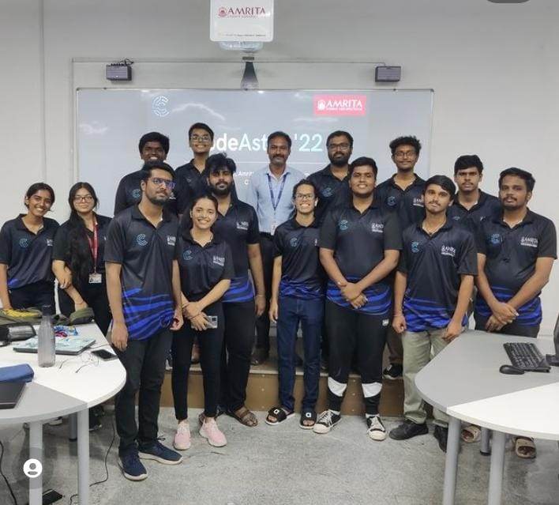

| About Tech Fest Cyber Tech Fest is a type of Competition in which various fields of cyber security is covered and tasks are given with depth knowledge. Students are asked to complete the task in given time to win Cash Prices |
| Events Topics and Session : |
| CTF (Capture The Flag) Capture The Flag is a competition containing cybersecurity challenges in different domains of cyber security such as Forensics Web Exploitation, Reverse Engineering, OSINT, Hardware etc. Oct 29, 2022 10.00 AM – 4.00 PM Team size: 2-4 Duration: 6 Hrs |
| Ideathon Ideathon with problem statements that solves specific cybersecurity issues. Oct 29, 2022 2.00 PM Team Size: 2-4 Duration: Problem statement will be given prior. Participants have to do a 5 min presentation about it on the day of the event, followed by judges' questions. |
| Scavenger Hunt: Scavenger Hunt is a quiz like competition with clues given in the description. And this will be an individually participating competition. These questions usually seem to be confusing. And the points scored will be based on how fast they hunt the answer. The questions will be related to web exploitation. Oct 30, 2022 10.00am - 12.00pm Duration: 2hrs |
| Cybertrivia: Questions related to basic concepts of cyber security and penetration testing. Team Size: 3 Oct 29, 2022 4.30pm - 5.30pm Duration: 1 hr |
| Debug the code: Debug the code will contain programs in different popular programming languages where the programs will be with errors, try to resolve and get the output. Oct 30, 2022 4.30pm - 5.30pm Duration: 1hr |
| Identify the Language: We will be giving some program codes of old and unfamous languages and the participants have to find the language that is used. Oct 30, 2022 12.30 pm – 1.30pm Duration: 1hr |
 |
 |  |